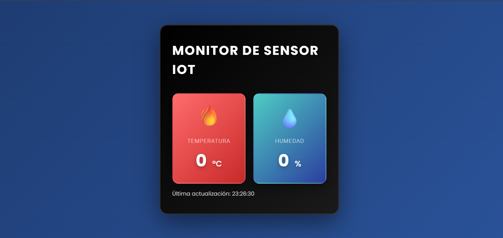

Biografía Personal
Página estructurada con buenas prácticas de HTML semántico donde detallo mi trayectoria, gustos personales, pasatiempos y objetivos a futuro en el sector tecnológico.
Ver ProyectoBienvenidos a mi portafolio web. Aquí comparto mi progreso, proyectos y aprendizajes en el mundo del desarrollo de software.
Soy estudiante de Ingeniería de Software en la Universidad Tecnológica del Cibao Oriental (UTECO). Me apasiona el desarrollo web, la creación de aplicaciones funcionales y explorar el campo de la ciberseguridad.
Me considero una persona creativa, curiosa y con un compromiso continuo por aprender nuevas tecnologías, resolver problemas complejos y escribir código limpio y bien estructurado.
Página estructurada con buenas prácticas de HTML semántico donde detallo mi trayectoria, gustos personales, pasatiempos y objetivos a futuro en el sector tecnológico.
Ver Proyecto
Proyecto interactivo que integra hardware y desarrollo web para la lectura, recepción y visualización de datos de temperatura y humedad en tiempo real.
Ejercicio introductorio con JavaScript enfocado en el manejo de eventos de clic en botones, manipulación de funciones y redirecciones dinámicas entre páginas.
Ver Práctica¿Te gustaría ponerte en contacto o ver más sobre mi trabajo? Puedes encontrarme en mis redes sociales y repositorios: